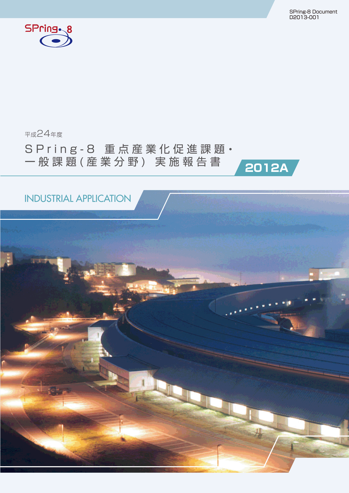
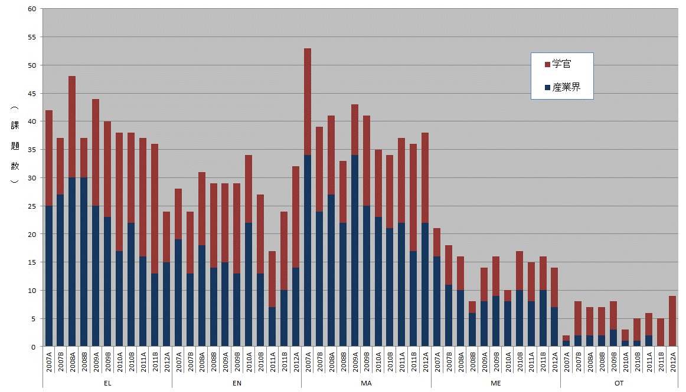
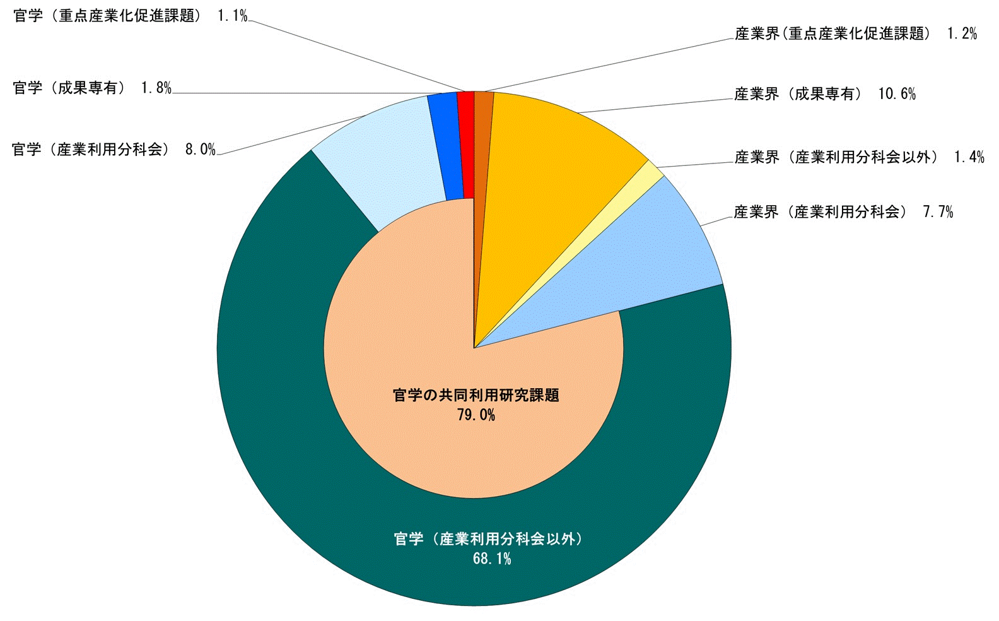
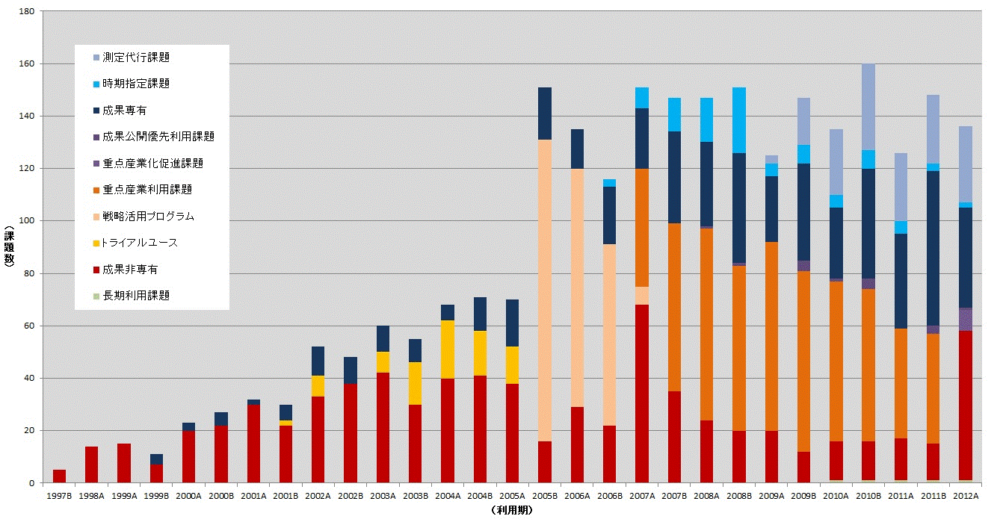
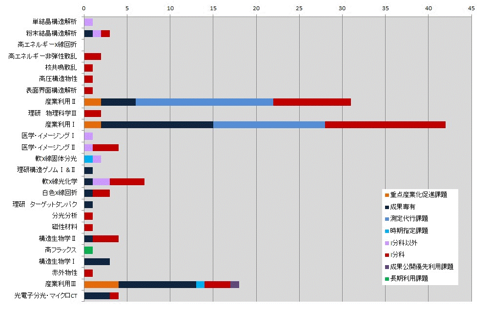

目次

1. はじめに2. 課題募集制度の概要
3. 成果公開の考え方
4. 実施状況
5. 産業利用分野の利用動向
6. 報告書の採録対象
7. 報告書
* 送付を希望される方は、連絡先（氏名、所属、〒住所、E-mail）をご記入の上、 事務局 support@spring8.or.jp までE-mailでご連絡ください。
はじめに
平成19年度（2007A期）より領域指定型の重点研究課題のひとつとして5年間実施した重点産業利用課題は 平成23年度（2011B期）をもって終了し、平成24年度より産業利用分野成果非専有課題の利用制度は一般課題と 重点産業化促進課題になった。本報告書は、2012A期の産業利用分野における課題実施状況の報告を目的として 実施した一般課題（産業利用分野）と重点産業化促進課題のうち、SPring-8利用研究成果集としての審査を 行わなかった課題の報告書を収録したものである。
課題募集制度の概要
- 一般課題（産業利用分野）
一般課題（産業利用分野）の課題とは、課題申請の際に産業利用分野（I）での課題審査を希望した成果非専有の 一般課題（課題審査は課題審査委員会産業利用分科会が行う）を指し、課題申請者の所属で区別されるものではない。 大学等の公的研究機関に所属する者でも、一般課題（産業利用分野）への申請は可能である一方、民間企業に所属 する者が他の審査分野に申請することも可能である。なお、民間企業に所属する者が産業利用分野以外の分野に 申請した課題は一般課題（産業利用分野）としては扱わない。一般課題（産業利用分野）の募集は他分野の一般課題と同様に 、年2回の課題募集期間において全ての共用ビームラインへの申請が可能である。これに加えて、平成23年3月2日実施した 重点産業利用課題評価委員会において、"継続が望ましい"と提言された重点産業利用課題の制度を産業利用分野の一般課題 に適用している。この産業利用分野の一般課題に特徴的な制度は以下の4項目である。
a) 産業利用ビームラインI（BL19B2）、II（BL14B2）、III（BL46XU）は半期ごとに前半を1期、後半を2期とした2回の課題募集を行う（年4回課題募集を実施）。1期と2期の両方で利用実験を行いたい場合は、継続的な研究内容の課題であってもその都度、新規課題として応募することが必要である。
b) 新規利用拡大の観点から課題審査において利用経験を考慮する。
c) 民間企業利用拡大の観点から課題審査において所属機関を考慮する。
d) 課題実施後約2～4か月以内に所定の書式の産業利用課題実施報告書を提出する。なお、この報告書はSPring-8利用研究成果集として審査を受けることも可能である。
e) 全採択課題に担当コーデイネーターを配置する。
f) 科学技術的妥当性に関する審査は
(1)産業基盤技術としての重要性および発展性
(2)社会的意義および社会経済への寄与度の観点
- 重点産業化促進課題
「重点産業化促進課題」は領域指定型の重点研究課題として、平成23年9月13日に指定された。この「重点産業化促進課題」は、平成22年度に閣議決定された新成長戦略に掲げられているように研究開発のデスバレー克服に向けた、大学や公的研究機関のみならず産業界からの利用を通じた産学官連携（産学官ネットワーク化）による技術開発を支援するものである。この趣旨にもとづき、課題の募集、審査、実施及び報告は一般課題とは若干異なった制度となっている。
2-1) 募集の対象
産学官連携促進が目的であるため、研究組織（共同で実験を行うグループ、つまり実験責任者と共同実験者から成るグループ）が「産学」、「産官」、もしくは「産官学」である課題を募集の対象とする。例えば、産業界（民間企業を指す）を含まない「官学」の研究組織や産業界のみから成る組織は対象とはならない。また、JASRIは独立した所属機関とは見なさない（JASRIは「産」「官」のいずれにもあたらない）。 申請の折には産学官連携が効果的に行われることを明らかにするために、課題実施にあたって、それぞれの所属機関ごとの役割分担を明記することが求められる。
2-2) 対象ビームライン、シフト数割合、及び募集
産業利用ビームラインI（BL19B2）、II（BL14B2）、III（BL46XU）を対象に、ユーザー実験に供するビームタイムのうち15%以内を配分する。 募集は一般課題と同時期に半期2回行う。なお、1期募集において後述の通期課題の2期分のシフト数も含めた合計シフト数が半期を通じたビームタイムの上限に達した場合は2期に募集を行わない。
2-3) 通期課題
1期、2期の両方で利用実験を行いたい場合は、その都度新規課題としての応募が必要であるが、継続的･計画的な実施により一層の成果創出が期待される課題は、“通期課題”とし1期応募の折に2期分のシフト数も含めた申請を受付ける。なお、2期は通期課題の募集は行わない。
2-4) 審査
最初に研究組織が産学官連携であるかどうかの申請要件について審査を行う。申請要件を満たさない課題は重点産業化促進課題として不採択となる。申請要件を満たす課題については、一般課題（産業利用分野）と同様に課題審査委員会産業利用分科会が行う。なお、重点産業化促進課題として不採択となった課題は、自動的に一般課題（産業利用分野）の課題として、他の一般課題と一緒に改めて審査される。重点産業化促進課題においては一般課題（産業利用分野）の観点に加えて産官学連携が有効に機能するかどうかも含めて審査する。
2-5) 報告
WEBより提出するビームタイム利用報告書、利用実験課題報告書に加えて課題実施後約2～3か月以内に所定の書式の重点産業化促進課題実施報告書を提出する。なお、この報告書はSPring-8利用研究成果集として審査を受けることも可能である。
成果公開の考え方
成果の公開については、重点産業化促進課題、一般課題（産業利用分野）ともに他の成果非専有の一般課題と同様に学術誌上への論文掲載（博士論文も含む）もしくはSPring-8利用研究成果集への採録による成果公開が求められる。この産業利用課題実施報告書及び重点産業化促進課題実施報告書の提出は成果の公開とは認定されないが、これらの報告書は著者からの申し出によりSPring-8利用研究成果集としての審査を受けることが可能である。SPring-8利用研究成果集としての審査を受けない実施報告書は、JASRIコーデイネーター等による校閲を経て課題実施期が終了して約6カ月後に出版･公開されるが、それ以外はSPring-8利用研究成果集としての審査終了後に公開される。なお、一般課題（産業利用分野）は実験終了後一定期間内に成果専有課題への切替を申請することができるが、重点産業化促進課題は成果専有課題への切替は認めない。
なお、平成24年度2012A期の一般課題（産業利用分野）及び重点産業化促進課題の実施報告は、平成25年9月に開催予定の「第10回産業利用報告会」等で口頭及びポスター形式での報告を予定している。
実施状況
以下に平成24年度2012A期の重点産業化促進課題、及び一般課題（産業利用分野）の応募・採択結果を表1、表2にまとめる。- 応募・採択結果 重点産業化促進課題
表1．応募時期及び研究機関別課題応募・採択結果
*重点産業化促進課題で不採択となり、一般課題として再審査され採択された課題は 採択数から除外している。募集時期 機関分類 応募数＊ 採択数＊ 採択率（%） 第1回募集 学官 11 8 72.7 産業界 13 4 30.7 合計 24 12 50.0 第2回募集 学官 2 0 0 産業界 6 3 580.0 合計 8 3 37.5 総計 32 15 46.9
今回はじめて募集した重点産業化促進課題の採択率は1期50.0%、2期37.5%で一般課題 （産業利用分野）と比較して著しく低くなっている。重点産業化促進課題で不採択となった 課題の中で研究組織が官学のみなど応募要件を満たさない申請も多く（3-4割程度）、 この制度が多くの利用者にまだ認知されていないことを示している。 なお、BL19B2は第1期に第2期分のビームタイムも含めて通期課題として採択された課題が複数あったため、 第2期の重点産業化促進課題の募集を行わなかった。第2期の採択率が特にひくくなった原因は、 通期課題による第2期分のビームタイム確保により、新規応募課題に供給できるビームタイムが少なくなったことが原因と考えている。 なお、平成23年度の重点産業化促進課題の応募時には、産学の研究体制であったが、 実験を行った平成24年度は産学共同研究の体制が解消になった課題もあった。 。
- 応募・採択結果 一般課題（産業利用分野）
表2．応募時期及び研究機関別一般課題応募・採択結果
*応募数には重点産業化促進課題で不採択となり、一般課題として再審査された課題 （1期産業界 7、学官 5、2期 産業界 3、学官 2）、及び重点グリーン/ライフ･イノベーション推進課題で 不採択となり一般課題として再審査された課題（1期のみ 産業界 2、 学官 7）を含む。募集時期 機関分類 応募数＊ 採択数＊ 採択率（%） 第1回募集 学官 42 36 85.7 産業界 41 35 85.4 合計 83 71 85.5 第2回募集 学官 21 17 80.9 産業界 21 14 66.7 合計 42 31 73.8 総計 125 102 81.6
- SPring-8利用研究成果集としての審査
前記のとおり2011B期より成果公開の扱いが変更になったため、実験責任者の希望に応じて 重点産業利用報告書をSPring-8利用研究成果集への公開文書としても扱うことも可能とした。 平成25年1月31日の時点で100課題のうち48課題がSPring-8利用研究成果集としての審査を希望している。 公開は査読審査が終了し成果審査委員会での承認後となるため、これら48課題の報告書はここには採録されない。
産業利用分野の利用動向
-
１)産業分野ごとの動向
図1は、産業利用分科会で審査を経て採択された成果非専有課題実施件数の推移である。 2012A期は重点産業化促進課題と一般課題（産業利用分野）の和、2011B期以前は重点産業利用課題と 一般課題（産業利用分野）の和である。2012A期はかつて産業利用の主役であったエレクトロニクス分野（EL）の 割合が大きく減少し、素材分野（MA)、エネルギー環境分野（EN)よりも実施件数が少なくなっている。 エレクトロニクス分野（EL)における産業界の実施件数は2011Bとほぼ同数であるが学官の実施件数の減少が著しい （2011B期のほぼ半分）。一方、2011A期に大きく減少したエネルギー環境分野（EN)は、2011B期よりも更に増加して 2011B期の水準にまで回復した。なお、素材分野（MA)、健康･医療分野（ME)は2010年と比較して目立った変化はない。

図1. 産業利用分野における成果非専有課題実施件数
２）2012A期における民間企業の利用状況
図2は2012A期共同利用研究実施課題（共用ビームラインで実施した課題）を所属機関、専有 ／非専有の別でその割合を示している。 民間企業に所属する実験責任者の課題数が全体の21.0％で、その内訳は一般課題（産業利用分野）が7.7%、重点産業化促進課題が1.2%、 測定代行を含む成果専有課題が10.6%と企業による課題のほぼ半分に達している。企業利用に占める成果専有課題の割合が50%を超す状態は 2011A期以降持続していることから、企業に成果専有利用が定着しつつあることを示すものと考えている。

図2. 2012A期 共同利用研究実施課題における民間企業の実験責任者の割合
３）民間企業の課題実施動向
図3は共用ビームラインにおける民間企業の課題実施状況の推移を課題種ごとに示している。 毎年A期はB期よりも実施課題数が少ない傾向があるが、2012A期も2011B期より実施課題が少なくなった。 特に、2012A期はビームラインのDown Stream Shutterの故障により4月に実施予定だったすべての課題が実施できなかったことも 多少影響しているものと思われる。

図3．民間企業による共同利用研究実施課題の課題分野別推移
４）民間企業の共用ビームライン利用状況
2012A期におけるビームラインごとの民間企業による利用件数を図4に示す。 一般課題（産業利用分野）は17本のビームラインで実施され、民間企業による放射光利用技術の広がりを示している。 特に、核共鳴散乱や高圧構造物性など産業利用との関係が薄いと思われるビームラインも民間企業の利用があることは 大変興味深い。一般課題（産業利用分野）及び成果専有課題は、産業利用ビームラインI、II、IIIでの実施が 他のビームラインよりも著しく多いのはこれまでと同様である。また、これらのビームラインにおいて測定代行を含む 成果専有課題が一般課題（産業利用分野）及び重点産業化促進課題などの審査課題よりも実施件数が多くなるのもここ数年の傾向である。 なお、産業利用ビームラインIIIの課題実施件数が産業利用ビームラインI、II よりも著しく少ないことはこのビームラインで 実施されている長期利用課題の影響と考えている。長期利用課題は2012A期で終了するので、今後の利用状況に注目している。

図4．2012A期 利用技術分野別（ビームライン別）民間企業利用件数
報告書の再録対象
平成25年1月31日の時点で100課題のうち48課題がSPring-8利用研究成果集としての審査を希望している。
これ以外の52課題の重点産業化促進課題実施報告書と産業利用課題実施報告書を採録している。
また、公開延期期間が終了してWEB（
http://support.spring8.or.jp/Report_JSR/Jsr_ptponed.html）で公開されている 2009A期から2009B期にかけて実施された46課題の報告書も付録として掲載している。